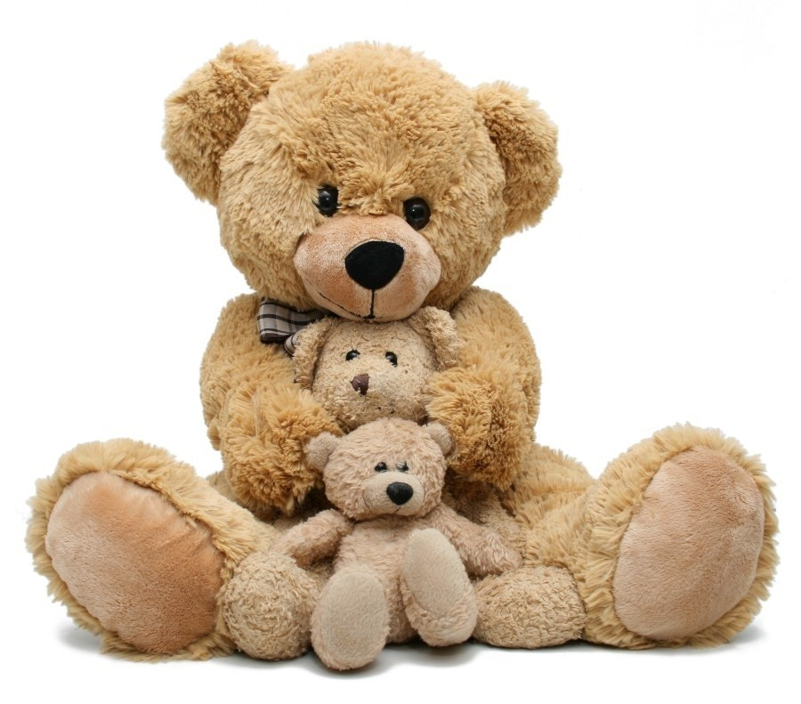
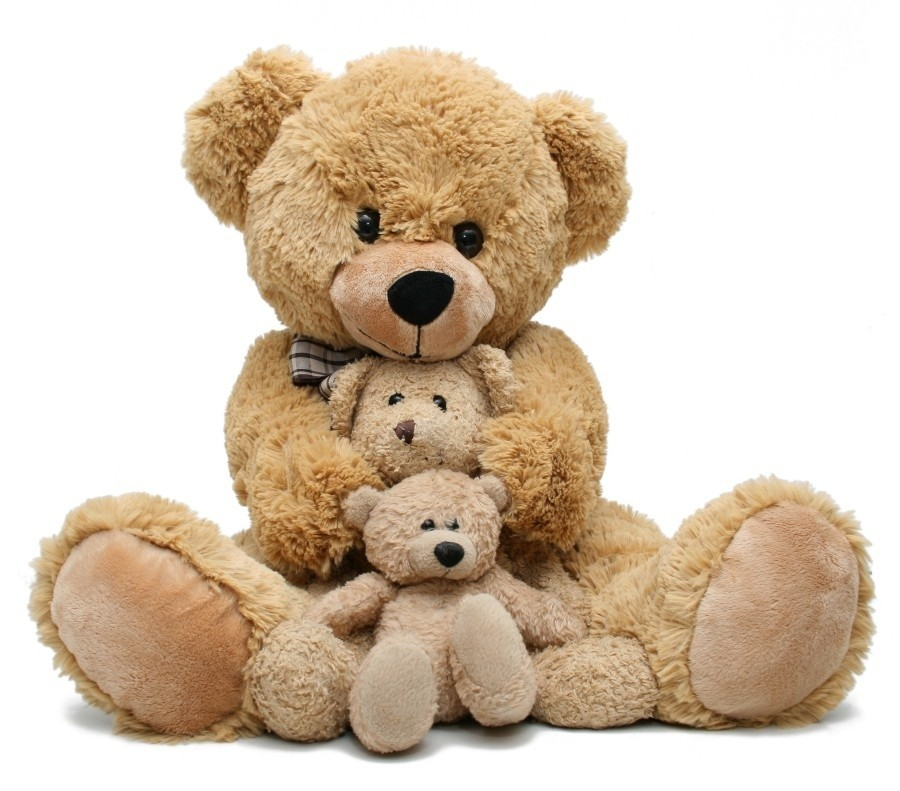

Dzień Pluszowego Misia
Dzień Pluszowego Misia obchodzimy 25 listopada. Pluszowe misie to ulubione przytulanki dzieci na całym świecie i symbol ciepła oraz bezpieczeństwa.
Dzień Pluszowego Misia obchodzimy 25 listopada. Pluszowe misie to ulubione przytulanki dzieci na całym świecie i symbol ciepła oraz bezpieczeństwa.
